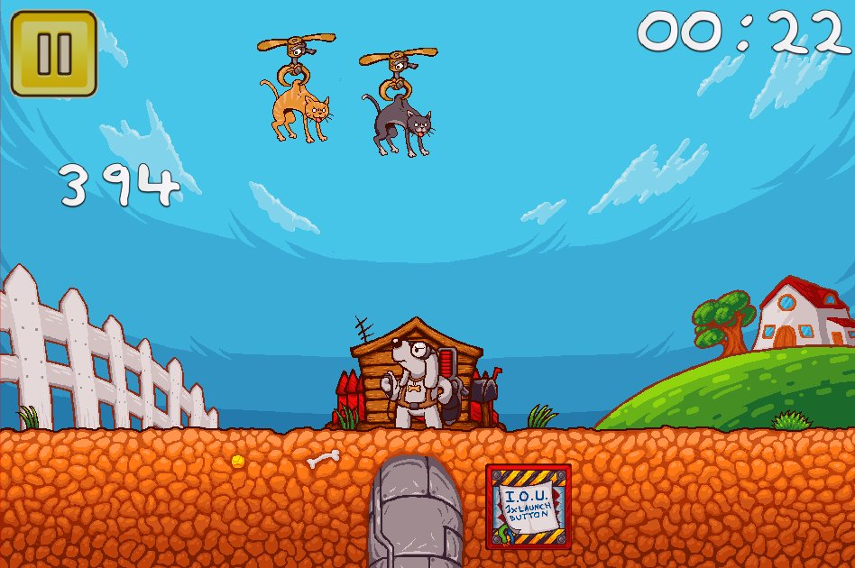
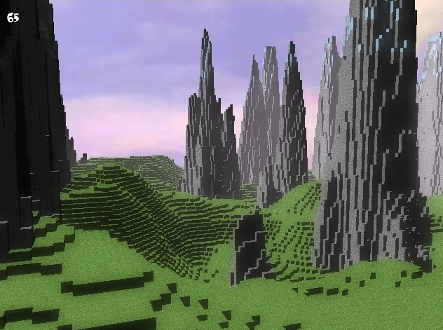
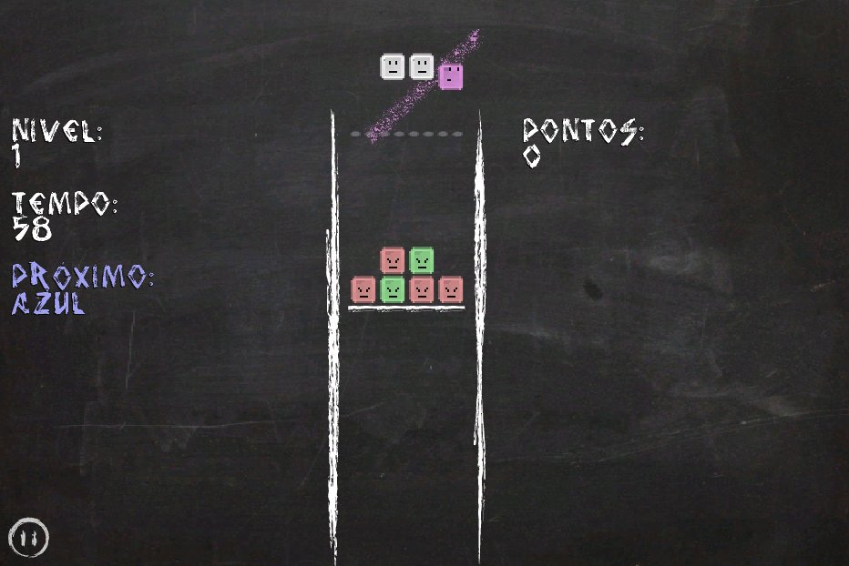
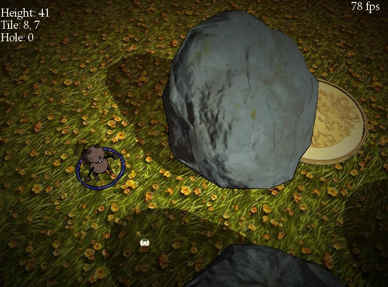
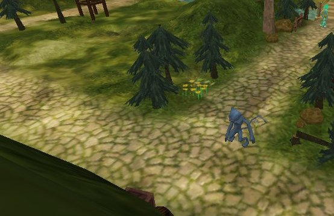
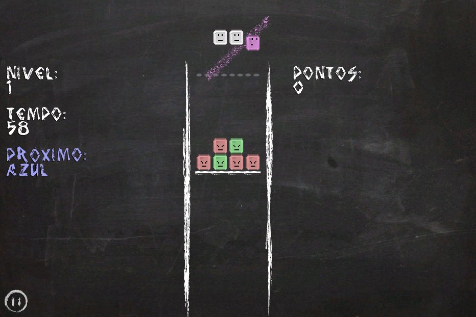
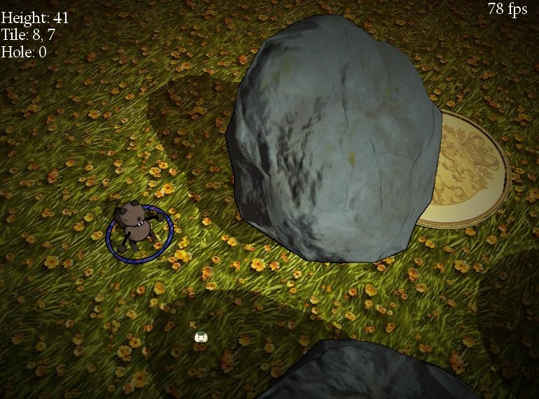
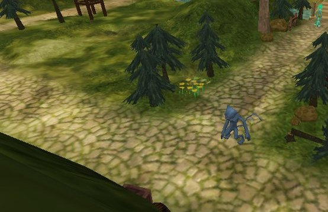

TERRA Game Engine
Cross platform game engine written in Object Pascal.
This project is maintained by Relfos
A Game/Multimedia engine written in Object Pascal


 





Open-source, production ready, with multiple titles shipped.
Want to make a game using Pascal?
This game engine helps you make any game you want, for any platform you want, using the Pascal language.
This is the most complex Pascal game engine, developed over a period of 8 years. It was developed mainly using Free Pascal Compiler, but supports also Delphi 7 and up.
You can make both free and commercial games and other multimedia products with it!
Since it ships with support for the most common desktop and mobile platforms, along with support for the most common audio and image formats, just this engine alone can satisfy your requeriments for most of your projects, requiring no external libraries or DLLs.
Don't believe?
Check out Minimon, a 3D MMORPG written in Object Pascal that is available on Steam using the TERRA engine!
What's coming next?
I want to bring the engine to more platforms, like HTML5 and Windows Phone. However due to FPC not support Windows Phone I'm currently working on a separate solution. HTML5 could be supported by adding support to Smart Mobile Studio, which allows targeting HTML5.
For those interesting in console games, I've got experimental branches of the engine for Nintendo DS, Wii and PS Vita. However since this can be used at most for homebrew games (Except PS Vita, which you can actually go commercial), I did not dedicate time to complete it.
Also I'll possibly add more tools and support for more file formats soon.
Want to contribute?
I've created this engine alone for many years. But I decided to make it free to everyone, and I would like help from other Pascal programmers to improve it.
You can help by reporting bugs, help writing documentation or even fixing bugs or implementing new features!
Support or Contact
If you have any questions about the code or documentation contact me.